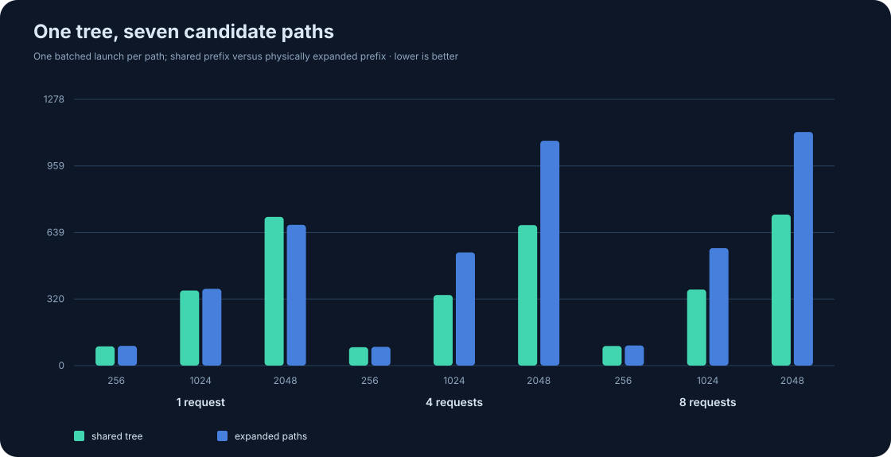
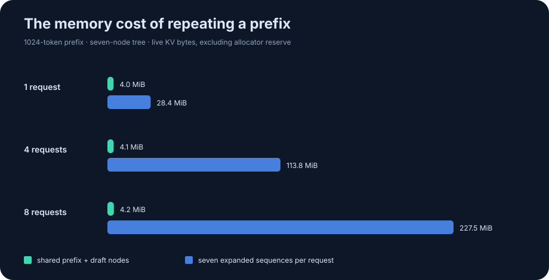
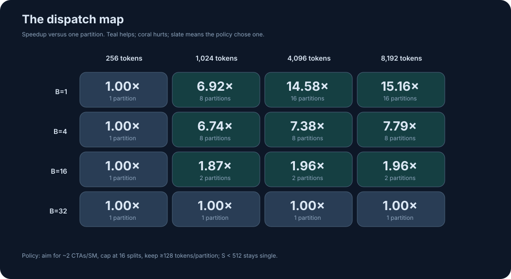

The cache has to agree with the tree.
In ordinary token decode, each query attends to every previous token. In tree verification, a candidate must see the shared prompt and its own ancestors, while its siblings remain invisible. Once a path is accepted, its K/V joins the durable cache. A sibling request may still point at the same partially filled final page, so an in-place append would silently alter that sibling's future attention.
Shared prefix storage
Physical prefix pages exist once; page tables can refer to the same IDs for multiple requests.
Candidate nodes
A binary draft tree stores each node's K/V once, with one parent index per node.
Critical invariants
Attention sees ancestors only. Commit changes one request without mutating shared siblings.
Click a candidate. See what it can read.
All seven nodes can be verified in one kernel launch because their K/V are already known. The parent pointers encode the causal tree mask without building a dense mask matrix. Select a node below; teal tokens participate in that node's softmax, while coral siblings are forbidden.
Draft tree · click a node
Candidate 3 reads:
The prefix is represented here by one token chip; the real kernel streams all valid tokens through a physical page table.
Numerically stable attention, without a score matrix.
One warp owns a request, candidate node, and query head. Its 32 lanes split D=64 or D=128 channels. For each prefix token, then each ancestor from leaf to root, lanes compute partial dot products and use warp shuffles to sum the score. The output vector stays in registers as an online softmax state.
m' = max(m, score)
alpha = exp(m - m')
p = exp(score - m')
l = alpha * l + p
a = alpha * a + p * value
m = m'
output = a / lQ/K/V are FP16, while dot products, maximum, denominator, and output are FP32. The ordinary paged GQA decode path also includes a split-KV option: independent sequence partitions produce partial (m, l, a) states, then a second kernel merges them with a global maximum. That makes a small batch occupy more SMs at long context lengths.
Shared prefix
Logical block → physical page → FP16 K/V.
Ancestors only
Follow parent IDs; siblings never enter the reduction.
Copy the page
Clone a shared partial page before writing accepted K/V.
Decode again
Updated page table and length feed the normal decode kernel.
0 → 1 → 3 at a 17-token prefix clones the final page, copies three accepted K/V pairs into slots 1–3, updates only request 0's metadata, and leaves request 1 unchanged. Rolling back the metadata reproduces the original output.The memory win is structural. The latency win is conditional.
The comparison is against one batched paged decode whose seven candidate sequences each have a physical copy of the prefix. It uses the same FP16 data, output shape, and one GPU launch. The tree path has a parent walk and shared pages; the expanded path has simpler per-sequence indexing but repeats K/V in memory.

Expanded latency divided by tree latency at 4 requests and a 1,024-token prefix: 543.4 / 338.9 µs.
At one request and 2,048 tokens, the tree kernel is slower: 714.1 µs versus 675.9 µs.

The secondary experiment: split-KV decode
A single warp per head provides too few CTAs when the batch is small and context is long. The heuristic targets roughly two CTAs per SM, caps splitting at 16, and requires at least 128 tokens per partition. On this implementation, 1 request at 4,096 tokens improves from 1,462.4 µs to 100.3 µs; at 32 requests the policy stays single because the batch already supplies parallel work. These are comparisons inside Branchcraft, not against production inference libraries.

Device: NVIDIA RTX PRO 5000 Blackwell, SM 12.0, driver 580.95.05, CUDA 12.8.1 compiler image. Inputs: deterministic FP16 normal values. Timings exclude host setup and copies, and include all attention launches. See the protocol.
What this artifact proves, and what it does not.
The independent CPU oracle checks each candidate's ancestor mask, empty prefixes, page boundaries, two head dimensions, and numerical agreement. A transaction test checks accepted-path replay, sibling isolation, and rollback. The raw CSV and chart generator make the performance claims inspectable.
The tree kernel is deliberately readable: one warp per output head, no tensor cores, no fused query-head reuse, and no DeFT-style prefix-aware partitioning. Its long-prefix single-request regression suggests an obvious next experiment: split the shared prefix across CTAs and merge it with the short ancestor suffix. Any such change needs a fresh correctness proof and benchmark.
The key story is the failure mode at a shared partial page and the invariant enforced by the tree mask, not a headline speedup.
Sources and context
- SpecInfer established tree-based speculative inference and verification.
- DeFT studied hardware-efficient tree attention and prefix-aware KV partitioning.
- PagedAttention motivated logical-to-physical KV block mapping and sharing.
- FlashInfer provides a production-scale attention engine and discusses serving workloads.
- NVIDIA CUDA C++ Best Practices Guide covers kernel design and CUDA-event measurement.